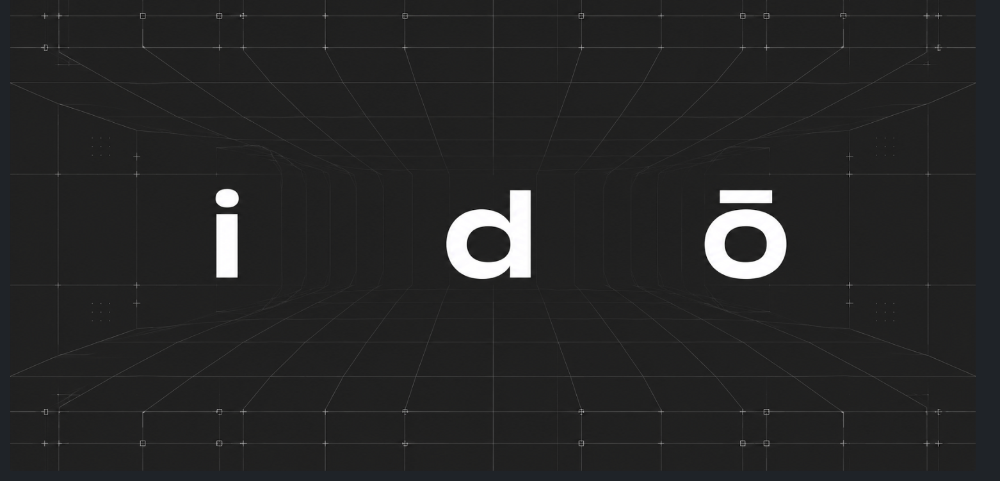

i d ō
Say what you want to build. Watch it appear — as native, editable objects in the tools you already use.
idō turns natural language into validated Engineering IR and builds it live in Blender and OpenSCAD. Local-first: your prompts, files, and geometry never leave your machine.
One prompt.
Real geometry.
idō is an AI agent that speaks CAD. A prompt like "make a cozy bedroom" becomes a structured, validated scene — walls, furniture, materials — built object by object in your viewport, with the full scene code open for you to read and edit.
-
01
Native objects, not meshes-from-nowhereEvery object lands as an editable primitive with real dimensions in meters.
-
02
Code you can touchView the generated scene code in-tool, edit it, and apply — the scene rebuilds.
-
03
Iterative by design"Add more windows" updates the existing scene instead of starting over.

Every request flows
through four stages.
A local FastAPI backend turns prompts into Engineering IR — a tool-agnostic JSON contract — then routes it to the adapter for your tool. Nothing ships until it validates.
Parse
Your prompt plus the current scene IR goes to the model, which returns a complete updated design.
Validate
Dimensions, labels, operations, and child references are checked against the IR schema. Invalid output is repaired or rejected.
Route
The validated IR is routed to the right adapter — Blender add-on or OpenSCAD writer.
Execute
The adapter builds objects in the viewport, or writes .scad and exports STL, PNG, 3MF, and SVG.
Design in Blender.
Engineer in OpenSCAD.
Blender
Install the add-on, press N, and prompt from the idō sidebar tab. The scene streams in object by object, the status keeps you posted, and View / Apply gives you full control of the generated code.
blender # then: N → idō tabOpenSCAD
Terminal-first. One command starts the backend, opens the watched SCAD file, and streams AI-written OpenSCAD into your editor — with STL, PNG, 3MF, and SVG exports on every successful render.
./ido "make a 30mm cube with a 10mm hole"Running in
four commands.
Python 3.11+, an OpenAI key in .env, and you're live. No cloud account, no telemetry — the API serves on 127.0.0.1:8010 and everything stays local.
# clone + environment
git clone https://github.com/v1dit/ido && cd ido
python3 -m venv .venv && .venv/bin/pip install -e '.[dev]'
# add your key
cp .env.example .env # set OPENAI_API_KEY
# run
.venv/bin/python -m backend
✓ idō serving on http://127.0.0.1:8010